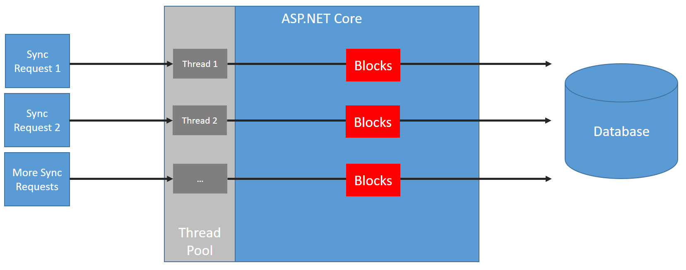
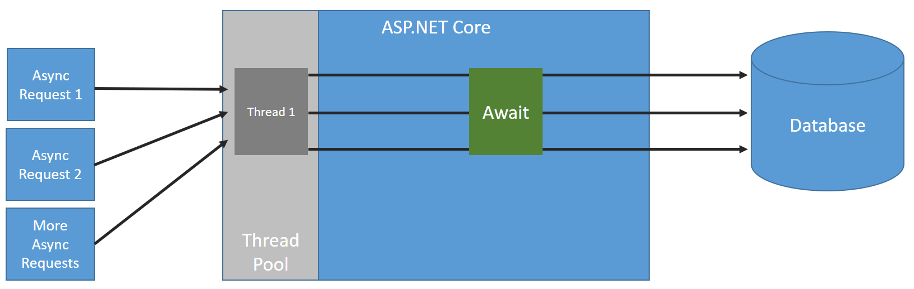

Synchronous Programming Execution
In Synchronous program, program is executed line by line, one line at a time.
Each time a function is called, program execution waits until that function returns before continuing to the next line of code.
namespace ConsoleApp2
{
class Program
{
public static void Print()
{
Console.WriteLine("Method Starts");
System.Threading.Thread.Sleep(3000);
Console.WriteLine("Method Starts after 3 seconds");
}
static void Main(string[] args)
{
Print();
Console.WriteLine("This will execute after print method execute");
Console.ReadKey();
}
}
}
Asynchronous Program Execution
Here, above bottleneck willnot occur.Here, await is rewritten inside print function so if any print() take time then rest of code present below Print() will continue to execute.
namespace ConsoleApp2
{
class Program
{
public async static void Print()
{
Console.WriteLine("Method Starts");
await Task.Delay(3000);
Console.WriteLine("Method Starts after 3 seconds");
}
static void Main(string[] args)
{
Print();
Console.WriteLine("This will execute after print method execute");
Console.ReadKey();
}
}
}
| Synchronous | ASynchronous |
| When you execute something synchronously, you wait for it to finish before moving on to another task. | When you execute something asynchronously, you can move on to another task before it finishes. |
For example
If you want to download a file from the internet you might use a synchronous function to do that but it will block your thread until the file finished downloading. This can make your application unresponsive to any user input.
Instead you could download the file in the background using asynchronous method. In this case the download function returns immediately and program execution continues normally. All the download operations are done in the background and your program will be notified when it's finished.
Note: Concurrency :Executing at the same time
Synchronous Execution
My boss is a busy man. He tells me to write the code. I tell him: Fine. I get started and he's watching me like a vulture, standing behind me, off my shoulder. I'm like "Dude, WTF: why don't you go and do something while I finish this?"
he's like: "No, I'm waiting right here until you finish." This is synchronous.
Asynchronous Execution
The boss tells me to do it, and rather than waiting right there for my work, the boss goes off and does other tasks. When I finish my job I simply report to my boss and say: "I'm DONE!" This is Asynchronous Execution.
(Take my advice: NEVER work with the boss behind you.)
=============================================================================================================================Asynchronous
One of prominent best practices in async programming is Async all the way i.e. you shouldn’t mix synchronous and asynchronous code. In particular, it’s usually a bad idea to block on async code by calling Task.Wait or Task.Result.
==================================================================================
Note: For synchronous API code, when a request is made to the API, a thread from the thread pool will handle the request. If the code makes an I/O call (like a database call) synchronously, the thread will block until the I/O call has finished. The blocked thread can’t be used for any other work, it simply does nothing and waits for the I/O task to finish. If other requests are made to our API whilst the other thread is blocked, different threads in the thread pool will be used for the other requests.Then think what happens when all thread from thread pool is used then problem occur .
If the API was to work in an asynchronous manner, when a request is made to our API, a thread from the thread pool handles the request (as in the synchronous case). If the code makes an asynchronous I/O call, the thread will be returned to the thread pool at the start of the I/O call and then be used for other requests. So all thread will not be used .
So, making operations asynchronous will allow our API to work more efficiently with the ASP.NET Core thread pool.
When the API is stressed, async action methods will give the API some much needed breathing room whereas sync action methods will deteriorate quicker.
Async code doesn’t come for free – there is additional overhead in context switching, data being shuffled on and off the heap, etc which is why async code can be a bit slower than the equivalent sync code if there is plenty of available threads in thread pool. This difference is usually very minor though.
It’s a good idea to write async action methods that are I/O bound even if the API is only currently dealing with a low amount of usage. It only takes typing an extra keyword per I/O call and the usage can grow.
=======================================================================================================================Increase Performance of ASP.Net
1) Make your page asynchronous:IIS uses CLR thread pool to get a thread that processes a request that comes to the application. Say, if there are currently twenty threads available in the pool, it means only twenty requests can be served in parallel, and if request processing takes some time then it could turn into a disaster if hundred odd requests are bombarded in few milliseconds. In this case, some of the requests may take very long time and for some may return 404 status code. For any request, the significant part of the time is gone when the request goes out of current scope like going to the database and fetching or reading/writing file, calling the web services, etc. During that period, current thread keeps waiting till the response is returned. So if we make the page asynchronous and time-consuming calls are handled asynchronously, then we can increase the throughput considerably.
What are the Benefits of Async ?
1) It can make application to handle more users.
2) It can process multiple I/O bound methods in parallel
3) It can make UI interface more responsive to the user
4) It can perform complex database calls that take seconds to return.
Where to Use?
1) Complex Database calls
2) Web services, Web API and other external 3rd party API.